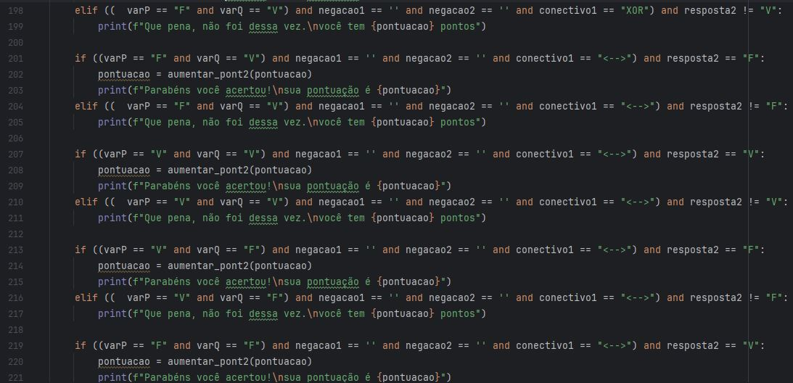

Nessa disciplina, com Kelly Rafaela Otemaier, aprendi a conceitos lógicos que auxiliam o Raciocínio de um programador, algo que, através da linguagem lógica, eu consigo decifrar problemas que existem ao desenvolver algum programa.
Atividades:
Jogo da Tabela Verdade
Desenvolvi, logo nas primeiras semanas do semestre, um jogo de tabela verdade, em que o jogador recebe proposições diferentes e deve responder se a resposta é “V” ou “F” de 15 pontos totais divididos em 5 perguntas com peso 1, e 5 perguntas com peso 2.Baixar jogo

Listas
Com diversas listas passadas pela professora, prática nesta matéria é o que não faltou. Concluí 5 listas das 7 que ela passou, praticando regras de inferência, simplificação, tabela verdade, árvores sintáticas como conteúdos em destaque.